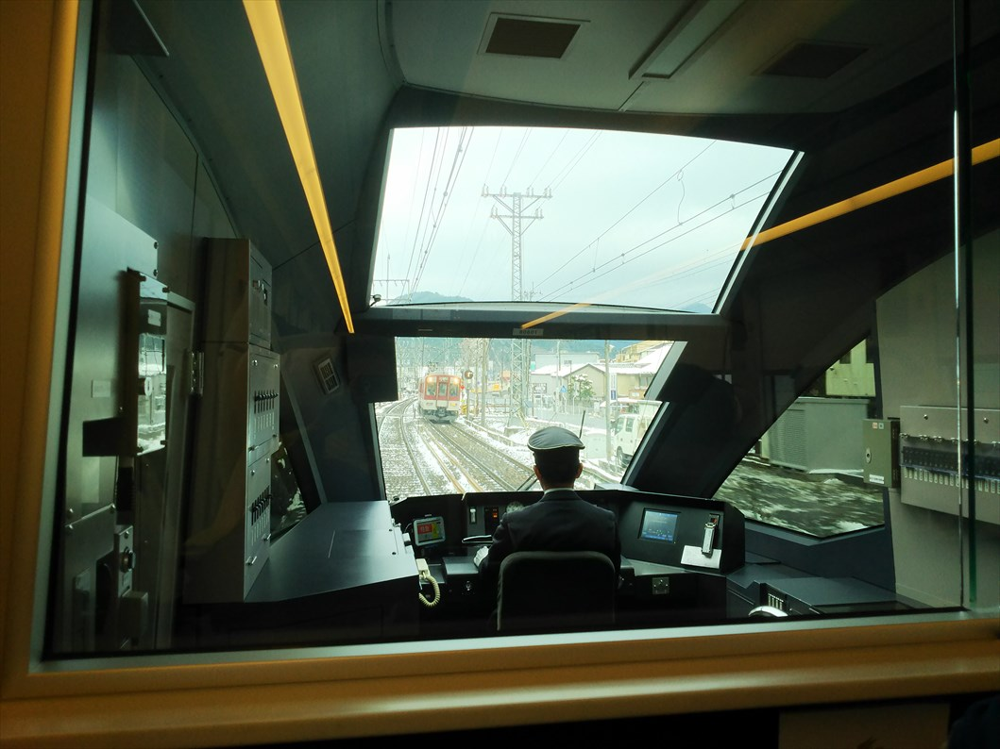
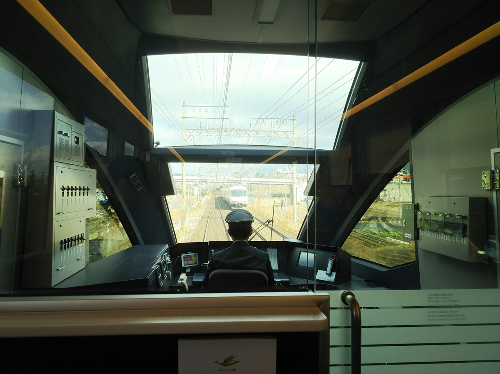
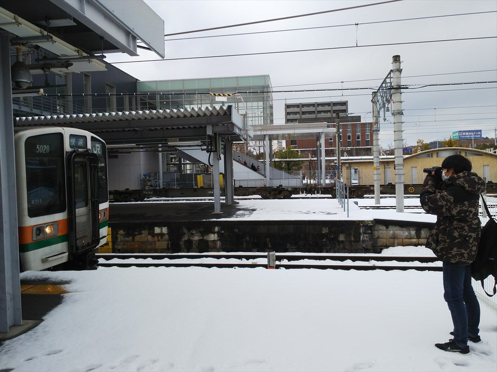

ので鉄オタの息子と日帰り旅に出かけました。

そう、この席っすよ。毎週末チャレンジしてようや
くこの日の席を何とかゲットしました！
岩佐カメラマンに来てもらったら良かったかな・・・
前日は大雪のニュースが流れてましたけど、奈良か
ら先は積雪あったみたいですね。

やっぱ端の席より真ん中の席のほうが、展望いいで
す。
無事名古屋に到着。
やっぱりひのとりの先頭は何度乗ってもいいっすね。
一般の人もカメラを向けてました。
もちろん愚息も・・・。
撮り鉄の息子のために、名古屋からひと駅の米野駅
にやってきました。
この駅、名古屋発の特急の入線待ちに使われてます。
さっき乗ってた編成が折り返し準備で戻ってきてま
す。
で、ここは隣にＪＲの名古屋車両区があります。
あおなみ線に貨物が走ったりするので、かなり鉄分
の濃い場所です。
しかし、名古屋えらい雪やな。
お目当ては置き換えの進むキハ８５。
この後、後ろのほうに写ってる跨線橋まで行きまし
た。この跨線橋、実は明治時代に山陰線が出来たと
きに保津川にかかってたものだそうです。

名古屋からは中央線に乗り込みます。ボロい車両で
すが、息子は大喜び。
到着した多治見駅で雪も気にせず撮り鉄してます。

多治見からは太多線に乗り換えます。息子は構内の
撮影に大忙しですが、私は寒いので早々に車内に逃
げ込みます。
可児に到着。ここは名鉄と接続してて、廃止の話も
出ている広見線に乗りかえることとします。
その前に、帰りの切符を購入することに。今回の旅
のメインは、実はひのとりではなく、来春に新型車
両に置き換わる、大阪直通のひだに乗ることなんで
す。
で、乗り換えに時間があるので、ここで大阪ひだの
切符も買おうとしたのですが・・・な、なんと、本
日、大阪ひだは動いてないって！
雪の影響で、名古屋行きのみになるとのこと。息子
はめちゃめちゃ残念がってました（私はキレてない
っすよ）
しゃぁないので、岐阜まではひだに乗ることにして、
そこからは鈍行で帰ることに。
前２本のひだが運休してることを考えると、動いて
いるだけでラッキーかも、と思うしかない。（大人
やなぁ）

名鉄のホーム。
廃止の噂もある広見線だけに、ＩＣも未対応でした。
車両には、今時珍しい行先看板がかかってました。
終点の御嵩に到着。
日も暮れてきて、めちゃ寒いです。まるで北陸にい
るようです。
ここでも息子は元気に撮り鉄。

ここは中山道の宿場町です。駅舎もいい感じですね。
可児に戻って引き続き太多線に乗って美濃太田へ。
念のため、駅で大阪ひだの件を確認するも、やはり
今日は大阪行きはないそう。
そして運悪いことに、鹿と接触したとかで、ひだも
遅れてる。寒い中、待ち時間が長くなるとはツイて
ないもんです。
で、待ってるときに、ホームに掲示されてるひだの
編成表見て気づいたんですが、新型に変わってる！
そうか、前のひだが運休で、車両運用が変わっても
うたんや・・・
息子はショックな上に、到着したひだは通路までぎ
っしり！デッキ部分にようやくスペース見つけて、
立って帰るはめに・・・
ほんま最後に最悪な状況やんけと思ってたら、まさ
かの車内放送が。「大阪方面に向かわれるお客様は
岐阜で大阪行きのひだ号にお乗り換えとなります」
って、どういうこと？大阪編成のキハ８５が待って
るってこと？
で、岐阜に到着。
なんと、岐阜駅で待ってましたよ。息子は大喜び！
席も前から２列目をゲット出来て、むちゃええがな。
米原で最前列に座ってた客が降りるというラッキー
もあり（息子は即その席をゲット）最高の結末とな
りましたっ！
大阪ひだも、新型車両に置き換わって継続されるとの
こと。
末永く続いてほしいものです。